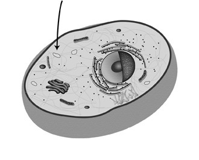
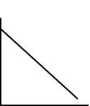
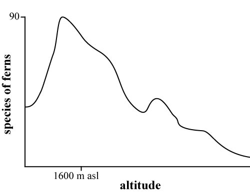
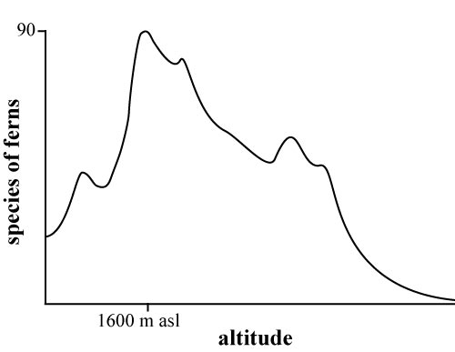
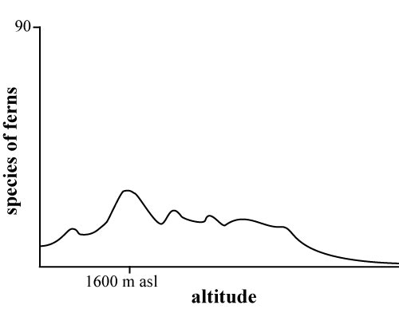
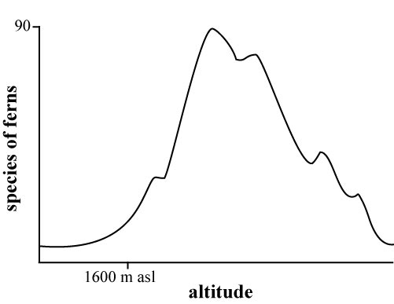

ACT-Practice Tests |
On the actual ACT Science test, you'll have 35 minutes to answer 40 questions. There are two ways to take the ZAPS ACT-Practice Science test. Click a tab to open the instructions for "Timed Test" or "Untimed Test."
By taking the test timed, you can get a feel for how well you will do under the time constraints of the actual ACT test.
- To begin the timed test, click on the timer box (the one with the clock icon in the gray bar below).
- Click on letter of the correct answer choice for each question. You may change your answer while still in this test.
- If you click out of this test, the timer will stop, and you will have to start all over.
- If you need to leave the test, click to stop the timer. You may restart the timer when you come back.
- When time runs out for this test, you will see the number of answers you got correct (green number) and incorrect (red number) in the boxes next to the timer. You can view your estimated ACT score by clicking on either of these two boxes.
Taking the test untimed is a good way to carefully study each test item and answer explanation.
- Carefully read the question and each of the answer choices.
- ZAP any answers you know to be incorrect.
- Select the correct answer by clicking on the letter.
- Clicking will reveal a pop-up box that tells whether the answer is correct or incorrect.
- Read the information in the box to learn more about the answer you chose or to see a tip about how to answer the question correctly.
- You cannot change your answer once you have clicked it, but you can view the tips about the other answer choices by clicking on them.
- A running total of your correct (green) and incorrect (red) responses will show in the boxes next to the timer.
- At the end of the test, you can view your estimated ACT score by clicking on either of these two boxes.
|
This test contains seven passages of scientific information, followed by several questions about each. After you read a passage, select the best answer to each question. On the actual ACT, you will fill in the corresponding bubble on your answer sheet; for this online test, click on the correct answer and read the explanation. As you answer the questions, you may look back at the passage as often as you wish. Do NOT use a calculator on this test. |
|
1. According to the chromatogram in Figure 3, which series correctly orders the molecules from least to most attracted to the phenol solvent? A.Alanine, sucrose, aspartic acid B.Malic acid, aspartic acid, citric acid C.Triose phosphate, sucrose, UDPG D.Glutamic acid, glycine, alanine The best answer is not A. This orders the molecules from most to least attracted to phenol. The best answer is not B. This looks at the attraction of molecules to the butanol solvent, not the phenol solvent. The butanol solvent carried species up the chromatogram. The best answer is not C. These species are not ordered by attraction to either solvent. The best answer is D. The phenol solvent carried chemical species (molecules) from the sample from right to left across the paper. Species that are most strongly attracted to the phenol solvent traveled farthest to the left. Alanine is the leftmost species, followed by glycine. Glutamic acid is farthest to the right. 2. Which two molecules have approximately the same degree of attraction to the butanol solvent? F.Sucrose and glycine G.Citric acid and sucrose H.UDPG and aspartic acid J.Aspartic acid and glycine The best answer is not F. Sucrose and glycine have similar attraction to phenol, not butanol. They are on a line parallel to the right edge of the paper. The best answer is not G. Citric acid was carried farther up the paper than sucrose, indicating that Citric acid experiences a relatively stronger attraction to butanol.” The best answer is not H. Aspartic acid was carried farther up the paper than UDPG, indicating that aspartic acid experiences a relatively stronger attraction to butanol. The best answer is J. The butanol solvent carries species up the paper. Species attracted to butanol to the same degree will be deposited along an imaginary line parallel or nearly parallel to the bottom edge of the paper. Aspartic acid and glycine are on a line nearly parallel to the paper’s bottom edge. 3. Based on the chromatogram, alanine appears to be: A.strongly attracted to both phenol and butanol solvents. B.weakly attracted to both phenol and butanol solvents. C.strongly attracted to phenol solvent and moderately attracted to butanol solvent. D.weakly attracted to phenol solvent and moderately attracted to butanol solvent. The best answer is not A. This would have placed alanine in a different area of the chromatogram. Answer A would have placed it at the top left corner The best answer is not B. This would have placed alanine in a different area of the chromatogram. Answer B would have placed it near the origin spot.” The best answer is C. The alanine spot is on the far left edge of the paper, indicating it was carried all the way across the paper by phenol and was strongly attracted. It is carried halfway up the paper, indicating moderate attraction to the butanol solvent. The best answer is not D. This would have placed alanine in a different area of the chromatogram. Answer D would have placed it about halfway up the right-hand edge.” 4. Alanine and solvent molecules are strongly attracted to each other because they are both polar: parts of each molecule carry small positive and negative charges. Benzene is a nonpolar molecule, with no positive or negative charges. Where would you expect to find benzene on this chromatogram? F.Near the origin G.Carried off the edge of the paper H.Near the alanine spot J.Near the sugar UDPG spot The best answer is F. A nonpolar species will not be attracted to either solvent, and so will not be carried dissolved by the solvent — as oil is not dissolved in water — or carried from the original sample spot. The best answer is not G. This would indicate some attraction to one or both of the solvents. According to the question, benzene is nonpolar, and thus not attracted to either solvent. The best answer is not H. This would indicate some attraction to one or both of the solvents. According to the question, benzene is nonpolar, and thus not attracted to either solvent. The best answer is not J. This would indicate some attraction to one or both of the solvents. According to the question, benzene is nonpolar, and thus not attracted to either solvent. 5. The spot labeled aspartic acid is much larger than the spot labeled glutamic acid. What can be deduced from this observation? A.There is more aspartic acid in the sample than there is glutamic acid. B.Aspartic acid is more strongly attracted to the solvents than glutamic acid. C.The carbon in CO2 is incorporated first into glutamic acid, then into aspartic acid. D.Aspartic acid is more strongly attracted to butanol than to phenol. The best answer is A. If one spot is large, it is most likely because there’s simply a lot of it in the sample. The best answer is not B. Spot size has nothing to do with strength of attraction to solvents or to placement on the chromatogram. The best answer is not C. There is no evidence on the chromatogram to support such a causal chain. The best answer is not D. Spot size has nothing to do with strength of attraction to solvents or to placement on the chromatogram. |
|
1. Which of the following best explains why the students got the ramps wet in Experiment 2? A.To remove heat generated by friction B.To simulate school floors on rainy days C.To test whether wet floors have friction D.To test which shoe would not slip on a wet floor The best answer is not A. The experiment does not mention heat as a factor. ZAP it. The best answer is B. The students are studying floor slipperiness under various weather conditions with varying footwear and surfacces. They must take wet days into account. The best answer is not C. Students were testing slipping hazards of various shoe types on various surfaces under various conditions, not trying to answer more specific questions. Even if you didn't understand the experiment, you could ZAP this answer choice because all surfaces have some friction. The best answer is not D. The point of the experiment was to find the greatest slipping hazard given combinations of all three factors: surface, wet/dry, and shoe choice. The students were not trying to answer narrower questions, such as which shoe would not slip. 2. During Experiment 1, a student brought in a fifth flooring material, and the group tested it. The results of Experiment 1 suggest that people walking in sneakers on this dry surface would slip more easily than they would on varnished wood or concrete, but less easily than they would on linoleum. The time it took for the sneaker to slide down this ramp was probably closest to: F.3.4 sec. G.5.0 sec. H.5.6 sec. J.7.0 sec. The best answer is not F. 3.4 seconds is outside the range for sneakers on any surface. The best answer is not G. The sneaker slid "less easily" on the new surface than on linoleum, meaning it was slower than 5.1 sec., not faster (5.0 sec.). The best answer is H. 7.0 seconds is outside the range for sneakers on any dry surface. The best answer is not J. On the new surface, the sneaker must have taken between 6.9 and 5.1 seconds to slide down the ramp, the slide times for varnished wood and linoleum. 3. The results of Experiments 1 and 2 suggest that a student is most likely to slip if he or she is wearing: A.sneakers on dry, varnished wood. B.dress shoes on dry concrete. C.sneakers on dry ceramic tile. D.dress shoes on wet linoleum. The best answer is not A. Sneakers on dry, varnished wood took the longest time to slide down the ramp. If you chose this answer, you confused the highest number as being the fastest. The best answer is not B. The data for dress shoes on dry concrete falls between the highest and lowest numbers; it can't be the "most." The best answer is not C. The data for sneakers on dry ceramic tile falls between the highest and lowest numbers; it can't be the "most." The best answer is D. The best way to approach this is to find the data points for each shoe/surface combination and label them A, B, C, and D. Look for the lowest number: the shortest slide time. 4. Given the information in the passage and the results of Experiments 1 and 2, what is the most reasonable conclusion? F.Dress shoes create friction only on wet surfaces. G.Water reduces friction on most flooring surfaces. H.Sneakers on linoleum always create less friction than sneakers on ceramic tile. J.In general, dress shoes create more friction than sneakers do. The best answer is F. Slide times are lower for most wet surfaces compared to the same surfaces when dry, indicating reduced friction on wet surfaces. The best answer is not G. The data show that dress shoes have some friction on all surfaces. If you don't know the answer, you can still use the True/False strategy to ZAP G because of "only." The best answer is not H. Although this sample shows less friction on linoleum than ceramic tile, we don't have enough data to say it "always" does. The best answer is not J. The data show that sneakers generally have more friction (slower slide times) than dress shoes do. 5. Which of the following relationships did the students most likely identify between friction and slipping hazard? A.Slipping hazard decreases as friction increases. B.Increased friction decreases slipping hazard for dress shoes, but not sneakers. C.Dress shoes become more slippery as friction increases on wet surfaces. D.Sneakers decrease slipping hazard more on wet surfaces than on dry surfaces. The best answer is A. The passage states, "Friction between surfaces keeps them from slipping along each other." Increased friction reduces the slipping hazard. The best answer is not B. Both dress shoes and sneakers took longer to slide on surfaces with more friction. The best answer is not C. Though dress shoes become more slippery on wet surfaces, it's because friction decreases, not increases. The best answer is not D. The data show that sneakers slip more on wet surfaces than on dry surfaces. |
|
1. Based on the information given, what is the main difference between the two researchers’ viewpoints? A.Researcher 1 thinks proteins are built in the nucleus, while Researcher 2 thinks proteins are built outside the nucleus. B.Researcher 1 thinks proteins are built in the parts of the cell where they will be used, while Researcher 2 thinks proteins are transported to the sites where they will be used. C.Researcher 1 thinks the cytoskeleton is used for transporting material inside the cell, while Researcher 2 thinks vesicles are used for transporting material inside the cell. D.Researcher 1 thinks RNA is used as a template for building proteins, while Researcher 2 thinks RNA is used as a template for building the endoplasmic reticulum. The best answer is not A. Neither researcher argues that proteins are built in the nucleus. The best answer is B. The last sentence of each researcher's viewpoint makes it clear that Researcher 1 thinks proteins are built on-site, while Researcher 2 thinks proteins are transported to their respective sites. The best answer is not C. This is a false dichotomy; the cytoskeleton and vesicles are both used to transport materials in the cells. Also, "how materials are transported" is not the point of contention. The best answer is not D. Researcher 2 does not argue that RNA is used as a template to build the endoplasmic reticulum. 2. According to Researcher 2’s claim, which cell diagram correctly shows the site of protein-building? J. The best answer is not F. Researcher 2 does not say that proteins are built in the nucleus: See "after a strand of RNA leaves the nucleus, it floats freely to a nearby organelle called the endoplasmic reticulum." The best answer is G. Researcher 2's argument states, "The endoplasmic reticulum is studded with protein-building bodies called ribosomes. The ribosomes use RNA as a template for building the new proteins." The best answer is not H. The cytoskeleton is used only to transport the finished protein to its destination: See "after a strand of RNA leaves the nucleus, it floats freely to a nearby organelle" and "After the proteins are made, they are packaged into vesicles, attached to the cytoskeleton, and transported to the places where they will be used." The best answer is not J. Vesicles are used for transportation, not protein-building: "After the proteins are made, they are packaged into vesicles. ..." 3. If Researcher 2 is correct, which of the following statements must be true about RNA? A.It must be transported along the cytoskeleton. B.It is created inside the endoplasmic reticulum. C.It can travel easily through the substance filling the cell. D.It comes out of the nucleus packaged in a vesicle, ready for transport. The best answer is not A. Researcher 2 states that RNA floats freely, not attached to the cytoskeleton. If you absolutely didn't know the answer and had to guess, you could ZAP F using the True/False strategy; "must" is a specific word. The best answer is not B. Researcher 2 states that RNA leaves the nucleus before reaching endoplasmic reticulum. The best answer is C. Researcher 2 states, "after a strand of RNA leaves the nucleus, it floats freely to a nearby organelle...." If this is so, the RNA must be able to travel easily through whatever substance is between the nucleus and the organelle. The best answer is not D. Researcher 2 does not state that RNA is packaged in a vesicle, only that protein is packaged in a vesicle. 4. If Researcher 1 is correct, which of the following statements may be true? F.RNA is a form of DNA. G.RNA is used only in the endoplasmic reticulum. H.RNA is labeled with a destination. J.RNA cannot be transported along the cytoskeleton. The best answer is not F. The passage states "The copy is not made of DNA; it is made of a molecule called RNA," indicating that DNA and RNA are not the same thing. The best answer is not G. Researcher 1 claims that RNA is transcribed outside the endoplasmic reticulum, at the sites where proteins will be used. If you didn't understand this question or the reading passage, you could improve your chances by ZAPPING this choice using the True/False strategy. "Only" is a specific word. But use this strategy only if you have to guess. The best answer is H. If, as Researcher 1 states, a protein's RNA is transported to its destination before the protein is built, it is reasonable to conclude that the RNA is somehow tagged with that destination. Otherwise there is a question as to how the cell "knows" where to send the RNA. The best answer is not J. Researcher 1 claims, "Once attached to the cytoskeleton, RNA moves to the location where the new protein is to be used." 5. Investigations of cell processes have provided several pieces of new evidence. Which of them could support Researcher 1's claims? A.Proteins have been found floating freely in the region marked B. B.RNA fragments have been found in the regions marked A, B, and C. C.Protein vesicles have been found attached to the cell structure marked D. D.RNA fragments have been found in the region marked E. The best answer is not A. This would also support Researcher 2's claims that RNA is used exclusively at the endoplasmic reticulum. The best answer is B. If RNA is found in multiple sites, it is possible that it has been used in multiple sites. This would support Researcher 1's contention that RNA is distributed around the cell and used to build proteins where they will be needed. The best answer is not C. This would support Researcher 2's claims that protein must be transported to the site where it will be used. The best answer is not D. Both arguments state that RNA emerges from the nucleus, so one might expect to find some of it near the nucleus. 6. What must be true in order to support either researcher's claim? F.The cell has a way of determining where proteins will be used. G.The cytoskeleton is composed of RNA. H.The nucleus is the major site of protein production. J.Some cells produce proteins outside the endoplasmic reticulum. The best answer is F. The cell must be able to send either RNA or proteins to their destinations, which means there must be some way of determining what that destination is or is not. The best answer is not G. The cytoskeleton's composition is unimportant in this argument, so long as it can transport vesicles. The best answer is not H. Both researchers accept that the nucleus is the site of RNA production, but that RNA leaves the nucleus before transcription. The best answer is not J. This claim would not support Researcher 2's argument. 7. According to the passage, RNA can best be described as: A.a protein. B.an exact copy of a full-length strand of DNA. C.a molecule that carries code for a protein. D.a molecule that carries the human genome. The best answer is not A. RNA is used for making proteins, but is not described as a protein. The best answer is not B. The passage states that DNA and RNA are not the same. The best answer is C. The passage states: "other organelles in the cell use the RNA as a template for building a new protein"; "when a strand of RNA reaches its destination, it is used as the template for building the new protein"; and "the ribosomes use RNA as a template for building the new proteins." The best answer is not D. RNA is not described as carrying the entire genetic code for a human. You can ZAP this answer because the word "genome" is not in the passage. |

|
1. An unknown amount of an unknown fertilizer is added to a 100-ml jar of pond water with a phytoplankton count of 100 phytoplankton per 50 µl. The pond water’s temperature is 20.2 C. Three days later, the phytoplankton count is 175 per 50 µl. Based on the results of Experiment 1, the fertilizer added to the jar was likely: A.5 ml of 10-15-10. B.10 ml of 10-15-10. C.10 ml of 24-8-16. D.15 ml of 24-8-16. The best answer is not A. This would probably yield a phytoplankton count of around 140, about half the 75% increase. The best answer is B. The increase in the phytoplankton count is 75%, which corresponds to the approximate increase in the phytoplankton count in Experiment 1 from 0 to 3 days with 10 ml of 10-15-10 fertilizer. The best answer is not C. These would probably yield phytoplankton counts of about 300. 10 ml of 24-8-16 nearly triples the count at 3 days. The best answer is not D. These would probably yield phytoplankton counts of about 450. 10 ml of 24-8-16 nearly triples the count at 3 days. 2. Which of the following variables was dependent in Experiment 2? F.Water temperature G.Amount of fertilizer added H.Phytoplankton count at 3 days J.Fertilizer nitrogen-phosphate-potassium ratio The best answer is not F. The student controls this factor. The best answer is not G. The student controls this factor. The best answer is H. The phytoplankton count depends on the water temperature and fertilizer type and amount, which are all independent variables controlled by the student. The best answer is not J. The student controls this factor. 3. Considering the results of Experiment 2, what observation can one make about the 24-8-16 fertilizer? A.This fertilizer produces more phytoplankton growth than the 10-15-10 fertilizer. B.Using this fertilizer drives out all other species in freshwater ecosystems. C.No observation can be made without also considering the results of Experiment 1. D.More of this fertilizer is needed to get the effects of 10-15-10 fertilizer. The best answer is A. The phytoplankton count is much higher with the 24-8-16 fertilizer. The best answer is not B. This experiment does not test whether the fertilizer drives out other species. The best answer is not C. It is possible to make observation A, as well as several others, without reference to Experiment 1. The best answer is not D. The fertilizer generates more growth than an equal volume of 10-15-10 fertilizer does. 4. According to the results of Experiments 1 and 2, what conclusion can be drawn about the effects of these fertilizers and water temperature on phytoplankton growth? F.Regardless of temperature, 10-15-10 fertilizer is about 1 1/2 times more effective than 24-8-16 fertilizer. G.As water temperature rises, 10-15-10 fertilizer becomes just as effective as 24-8-16 fertilizer. H.Regardless of temperature, 10-15-10 fertilizer is about 2/3 as effective as 24-8-16 fertilizer. J.As temperature falls, 10-15-10 fertilizer becomes less effective than 24-8-26 fertilizer. The best answer is not F. This confuses the relative effectiveness of the two fertilizers. The best answer is not G. Temperature does not affect the fertilizers' relative effectiveness. The best answer is H. 10-15-10 fertilizer produces yields about 2/3 of 24-8-16's yield, and this is true in both experiments. The best answer is not J. Temperature does not affect the fertilizers' relative effectiveness. 5. Based on the results of Experiment 1, the amount of time it takes for the phytoplankton count to double when using 10-15-10 fertilizer at 20 C is: A.slightly more than 3 days. B.slightly less than 3 days. C.slightly more than 6 days. D.slightly less than 6 days. The best answer is A. The phytoplankton count increases by about 75% in three days. To get the count to double, it would take just a little longer than three days. The best answer is not B. At less than three days, the phytoplankton count is increased by less than 75%. The best answer is not C. At 6 days, the phytoplankton count has nearly tripled. The best answer is not D. At 6 days, the phytoplankton count has nearly tripled. 6. Experiment 1 was repeated using 15 ml of fertilizer in each jar. Assuming that the phytoplankton populations did not outstrip the fertilizer supply, the phytoplankton population counts at the end of 3 days in the 24-8-16 jars would most likely be: F.significantly higher. G.remain constant. H.significantly lower. J.impossible to estimate. The best answer is F.It is reasonable to predict that a 50% increase in fertilizer added would translate to a 50% increase in phytoplankton growth. The best answer is not G. The experiment would suggest that an increase in fertilizer would create a corresponding increase in the phytoplankton count. The best answer is not H. The experiment would suggest that an increase in fertilizer would create a change in the phytoplankton count, and that change would be an increase. The best answer is not J. The experiment would suggest that an increase in fertilizer would create a change in the phytoplankton count, and that change would be an increase. | ||||||||||||||||||||||||||||||||||||||||||||||||||||||||||||||||||||||||||||||||||||||||||||||||
|
1. What is a reasonable interpretation of the results in Experiment 1? A.Spinach juice decomposes H2O2 about four times faster than potato juice does. B.Broccoli juice decomposes H2O2 about three times faster than kale juice does. C.Pepper juice contains a higher concentration of catalase than any other vegetable juice tested. D.Potato juice contains a lower concentration of catalase than carrot juice does. The best answer is A. Spinach juice produces a milliliter of gas in about 0.25 seconds, while potato juice produces that volume in 1 second. Since the O2 is said to come from H2O2 decomposition, it is fair to say that spinach juice is decomposing H2O2 at 4 times potato's rate. The best answer is not B. Broccoli decomposes H202 about four times more slowly than kale does. A lower number indicates more rapid decomposition than a higher number. The best answer is not C. Peppers produce O2 more slowly than any other vegetable juice tested, suggesting that it has the lowest concentration of catalase. The best answer is not D. Potato juice produces O2 more rapidly than carrot juice does, suggesting potato juice has a higher concentration of catalase.” 2. The student conducts another run of Experiment 1 with arugula and finds that it produces O2 at a rate of .448 sec/ml. Which vegetable juice or juices most likely contains a higher concentration of catalase than the arugula juice does? F.Lettuce, potato, broccoli, carrot, and pepper G.Spinach and kale H.All of the vegetable juices tested J.None of the vegetable juices tested The best answer is not F. This answer includes only vegetable juices with lower rates of O2 production than arugula juice. The best answer is G. Only kale juice and spinach juice produce O2 faster than arugula juice does, suggesting that both kale and spinach have higher concentrations of catalase. The best answer is not H. This answer includes vegetable juices with both higher and lower rates of O2 production than arugula's. If you didn't understand the question or ran out of time, you could ZAP this choice using the True/False strategy because of the word "All." The best answer is not J. Both spinach and kale juice have a higher rate of O2 production than arugula juice. If you didn't understand the question or ran out of time, you could ZAP this choice using the True/False strategy because of the word "None." 3. The student tested another vegetable and concluded that it had a concentration of catalase lower than potato's, but higher than broccoli's. Its rate of O2 evolution was: A.1.72 sec/ml. B.1.38 sec/ml. C.0.748 sec/ml. D.0.448 sec/ml. The best answer is not A. This rate of gas production is lower than broccoli's, indicating a lower concentration of catalase. The best answer is B. Broccoli produces a ml of O2 in 1.69 seconds; potato, in 1 second. A concentration of catalase higher than potato's and lower than broccoli's would produce a ml of O2 at a rate in between their rates. The only answer that fits this requirement is B, 1.38 sec/ml. The best answer is not C. because this rate of gas production is higher than potato's, indicating a higher concentration of catalase. The best answer is not D. This rate of gas production is higher than potato's, indicating a higher concentration of catalase. 4. What do the results of Experiments 1 and 2 show about the rate of gas production in the spinach and kale samples? F.They were both slow to break down H2O2 compared to the other samples tested. G.In both spinach and kale samples, the rate of gas production decreased over time. H.The rate of gas production increased more quickly over time for spinach compared to kale. J.Tne gas production rate stayed approximately constant over time in both spinach and kale samples. The best answer is not F. These spinach and kale produce O2 more quickly than any others tested. The best answer is G. As the experiment progressed, it took longer for the samples to produce an extra milliliter of O2. The best answer is not H. The time required to produce a second ml of gas was less for kale than for spinach at all intervals shown. The best answer is not J. The time required to produce another ml of gas increased at both the 40 and 60 second marks for both spinach and kale. 5. Which graph most accurately shows the rate of O2 gas production over the course of Experiment 2? The best answer is not A. Gas was never produced more quickly than it was at the first reading; this graph claims the rate of production increased before decreasing. The best answer is not B. This merely takes the numbers directly from the chart and graphs the increasing time required to produce another ml of O2. It does not use this data to answer the question, which is about the rate of O2 production, which is decreasing. The best answer is C. O2 was produced quickly in large quantities at the beginning of the experiment. As the experiment progressed, less O2 was produced per second: The rate slowed. Eventually all the H2O2 would be decomposed, and the rate of O2 production would fall to 0 ml/sec. The best answer is not D. This graph shows no consistent direction in the rate of change in O2 production. 6. As Experiment 2 progresses, the enzyme uses up H2O2, and must sometimes wait idly until H2O2 finds it in solution. Suppose the student repeated Experiment 2, doubling the concentration of catalase in the kale juice, but not in the spinach juice. What would be the likely result? F.The rate of gas production would decrease more rapidly in kale. G.The rate of gas production would increase more rapidly in spinach. H.Kale and spinach would produce gas at the same rates as before. J.Spinach would produce the same quantity of gas as before, while kale would produce half as much gas as before. The best answer is F. With extra catalase in the kale solution, H2O2 would be used up very rapidly. By the 60-second mark, the wait time for the next milliliter of O2 gas would be much greater than in the original experiment. The best answer is not G. A vegetable's rate of O2 production cannot increase as the experiment progresses, regardless of catalase concentration. It can only decrease as catalase uses up H2O2. The best answer is not H. There is no reason to expect spinach's rate of gas production to change. You can ZAP this answer because no change is made to the spinach. The best answer is not J. The amount of gas produced cannot change, regardless of the amount of catalase in solution. The amount of H2O2 stays steady, so the amount of O2 produced must stay steady. The only thing that can change is the rate of the gas production. | |||||||||||||||||||||||||||||||||||||||||

|
1. Using the observations sketched by the students, which material has the highest optical density? A.Water B.Diamond C.Gelatin D.Substance B The best answer is not A. Water had the lowest angle of refraction; it has the lowest optical density of the four. The best answer is not B. While diamond has the highest optical density on the reference chart, diamond was not among the materials the students tested. ZAP it. The best answer is not C. Gelatin has the second-highest angle of refraction among the materials tested. You're looking for the "highest" density. The best answer is D. The passage states, "The higher the material's optical density, the more it refracts, or changes direction of, light as light enters from the air." Of the materials tested, substance B bends light most, meaning it has the highest optical density. 2. According to the list of refractive indices in Table 1, which of the following materials is possible to be Substance A? F.Air G.Sapphire H.Sugar solution J.Crown glass The best answer is not F. Substance A's angle of refraction is between those of gelatin and water. Air has an optical density lower than both gelatin and water. The best answer is not G. Substance A's angle of refraction is between those of gelatin and water. Sapphire has an optical density higher than both gelatin and water. The best answer is H. With an angle of refraction between water's and gelatin's, substance A's optical density and refractive index must also be between the two. Sugar solution meets this requirement. The best answer is not J. Substance A's angle of refraction is between those of gelatin and water. 3. According to the list of refractive indices in Table 1, substance B could be: A.gelatin, polystyrene, sapphire, or diamond. B.ethyl alcohol, sugar solution, or plexiglas. C.crown glass, sapphire, or diamond. D.water, air, or vacuum. The best answer is not A. Substance B's angle of refraction is not identical to gelatin's. The best answer is not B. All materials listed have optical densities lower than substance B's. The best answer is C. Substance B has an angle of refraction higher than gelatin's; it slows light more than gelatin does, and must have a higher refractive index. This leaves only crown glass, sapphire, and diamond as possibilities in the table. The best answer is not D. Based on substance B's angle of refraction, all substances listed have optical densities lower than substance B's. 4. According to the passage, which of the following graphs best represents the relationship between optical density and angle of refraction? F. The best answer is not F. This would mean optical density decreases as the angle of refraction increases. The best answer is not G. This would mean optical density is unrelated to angle of refraction. The best answer is not H. This would mean optical density has an inverse relationship to the angle of refraction. The best answer is J. The passage says, "The higher the material's optical density, the more it refracts, or changes the direction, as light enters from the air." 5. Based on the data in Table 1, which of the following statements is not accurate? A.Plexiglas will refract light more strongly than ethyl alcohol. B.A vacuum will refract light less than any other medium in the table. C.Water will refract light more strongly than sapphire. D.A 30% sugar solution will refract light more strongly than water. The best answer is not A. Did you notice that the question asked, "which of the following statements is not accurate?" Pay extra attention to the question whenever you see a negative word. The refractive index of plexiglas (1.51) is higher than that of ethyl alcohol (1.36), making this an accurate statement. The best answer is not B. There's a trap in this question. Pay extra attention to the question whenever you see a negative word. The refractive index of a vacuum (1.00) is the lowest in the table, making this an accurate statement. If you relied on the True/False strategy here (ZAPPING "any") you would be wrong in this case. That's why it's best to only use the True/False strategy when you have to guess. The best answer is C. Pay close attention whenever you see a negative word in the quesion. The passage states, "The higher a material's optical density, the more it refracts, or changes the direction of light as light enters from the air." Sapphire has a higher refractive index than water and must refract light more strongly than water does; therefore, statement C is incorrect. The best answer is not D. The refraction index of a 30% sugar solution (1.38) is greater than that of water (1.33), making this an accurate statement. |
|
1. According to Graph 1, which altitude band on Kilimanjaro has the highest diversity of plant life? A.2500 to 2900 meters ASL B.1500 to 1700 meters ASL C.1300 to 1500 meters ASL D.700 to 900 meters ASL The best answer is not A. This band shows a number of vascular plant species much smaller than those found at 1300-1500 meters ASL. The best answer is not B. This band shows the peak for ferns only, not total vascular plant species. The fern graph is read on the right-hand side of the graph, and its peak is 90 species. This is only a small fraction of the number of vascular plant species found at this altitude. The best answer is C. The scale on the left-hand side of the graph shows the total number of vascular plants, including ferns. This is the relevant measure; only the line for this item (with empty circles) needs to be consulted. The total number of vascular plant species peaks between 1300 and 1500 meters, at about 750 species. The best answer is not D. This band shows a number of vascular plant species much smaller than those found at 1300-1500 meters ASL. 2. Given the data in the passage and Graph 2, which of the following is correct? F.Yearly rainfall amounts vary by as much as five meters, but overall, Kilimanjaro is becoming wetter. G.Yearly rainfall amounts follow a predictable pattern, but overall, Kilimanjaro is becoming wetter. H.Yearly rainfall amounts vary by more than a meter, but overall, Kilimanjaro is becoming drier. J.Yearly rainfall amounts are unpredictable, and the data shows no trend toward dryness or wetness. The best answer is not F. The overall trend on Kilimanjaro is not toward higher rainfall, nor do rainfall amounts vary by up to five meters per year. The best answer is not G. Rainfall amounts do not follow a predictable pattern. The best answer is H. The scale is found on the left-hand side of the graph, and 1000 ml = 1 meter. Rainfall can be seen to vary from about 750 ml/yr to about 2700 ml/yr, or about two meters. The trend of the graph appears to be toward less rainfall per year: Kilimanjaro is getting drier. The best answer is not J. Although rainfall amounts do not follow a predictable pattern, the trend is toward Kilimanjaro becoming drier. 3. If next year's rainfall on Kilimanjaro were to be about half the average for the years 1999 and 2001, the rainfall amount would be approximately: A.3000 ml B.1500 ml C.1000 ml D.750 ml The best answer is not A. This is the sum of the two years' rainfall. The best answer is not B. This is the average of the two years' rainfall. The best answer is not C. This is more than half the average of the two years' rainfall. The best answer is D. Rainfall for both 1999 and 2001 was about 1500 ml. Half of this is 750 ml. 4. Regions near Kilimanjaro have experienced temperature increases of up to 0.275 degrees C per year for the last 25 years. Scientists suggest that as temperatures rise, plant species will migrate to higher altitudes. If all vascular plants on Kilimanjaro were to migrate in response to global warming, their highest species diversity might be found at: F.600 meters ASL G.900 meters ASL H.1300 meters ASL J.1600 meters ASL The best answer is not F. This is lower than the current altitude for peak species diversity. Plants would have to move downhill to higher temperatures for this answer to be correct. The best answer is not G. This is lower than the current altitude for peak species diversity. Plants would have to move downhill to higher temperatures for this answer to be correct. The best answer is not H. This is the current altitude for peak species diversity, not the future hypothetical altitude. The best answer is J. Peak species diversity is currently at about 1300 meters ASL. If plants migrate up the mountain, the new altitude for peak species diversity must be higher than 1300 meters ASL. 5. Ferns generally live in damp, well-shaded areas. Higher altitudes are generally associated with drier conditions. Given those two pieces of information and the passage, if precipitation trends continue, which of these might reasonably show the distribution of fern species on Kilimanjaro in 25 years? A. B. C. D. The best answer is A. The trend is toward declining rainfall, or drier conditions. Ferns would thus thrive better at lower altitudes, where conditions would remain wetter. Graph F shifts the entire species-distribution graph for ferns down the mountain, with peak species diversity found at a lower altitude than at present. The best answer is not B. This does not take into consideration the effect of drier conditions on ferns. The best answer is not C. This presumes that ferns would not survive at all on Kilimanjaro in 25 years; this is not suggested by the passage or the question. The best answer is not D. This pushes fern populations into drier conditions, where they are less likely to flourish. |

Copyright (C) 2012, 2013 ZAPS Learning Company. No part of this work may be reproduced in any form or by means, electronic or mechanical, including photocopying, recording, or any information storage or retrieval systems, except as may be expressly permitted in writing by the publisher, ZAPS Learning Company, 941 Highway West, Lisbon, IA 52253. ZAPS is a registered trademark of ZAPS Learning Company.